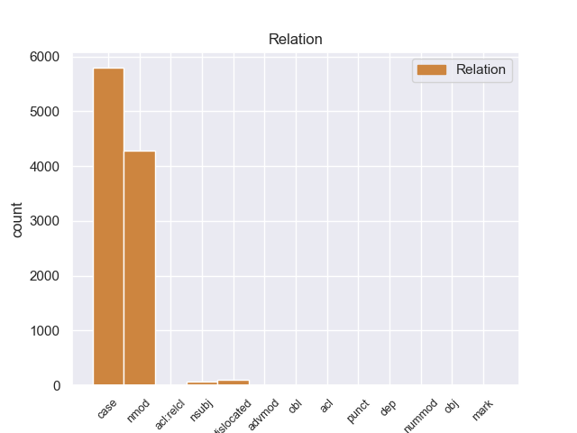
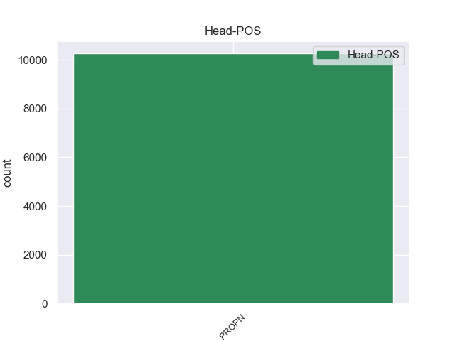
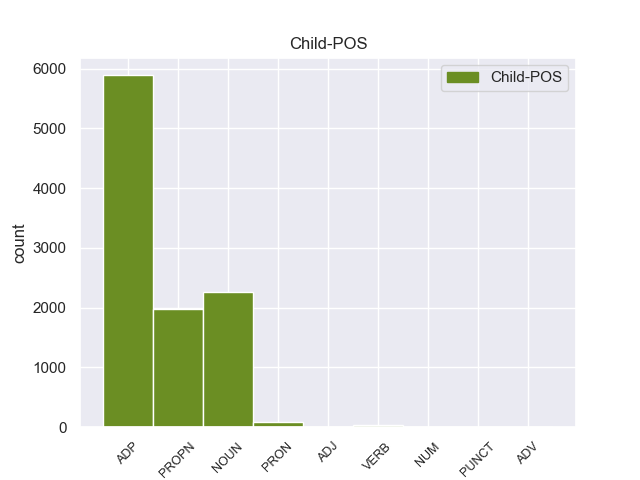

Distribution of features within this leaf



Agreement Rules sorted by frequency.
- When the dependent token is the case marking(case) of the head token, and the head token is PROPN
1 उन्होंने _ _ _ _ 0 _ _ _
2 यहां _ _ _ _ 0 _ _ _
3 वेटिकन _ _ _ _ 0 _ _ _
4 दूतावास _ _ _ _ 0 _ _ _
5 में _ _ _ _ 0 _ _ _
6 एक _ _ _ _ 0 _ _ _
7 शोक _ _ _ _ 0 _ _ _
8 पुस्तिका _ _ _ _ 0 _ _ _
9 पर _ _ _ _ 0 _ _ _
10 हस्ताक्षर _ _ _ _ 0 _ _ _
11 कर _ _ _ _ 0 _ _ _
12 पोप _ _ _ _ 0 _ _ _
13 जॉन _ _ _ _ 0 _ _ _
14 पॉल _ _ _ _ 0 _ _ _
15 द्वितीय द्वितीय PROPN NNP Case=Acc|Gender=Masc|Number=Sing|Person=3 0 _ _ _
16 के का ADP PSP AdpType=Post|Case=Acc|Gender=Masc|Number=Sing 15 case _ ChunkId=NP6|ChunkType=child|Translit=ke
17 निधन _ _ _ _ 0 _ _ _
18 पर _ _ _ _ 0 _ _ _
19 गहरा _ _ _ _ 0 _ _ _
20 दुख _ _ _ _ 0 _ _ _
21 प्रकट _ _ _ _ 0 _ _ _
22 किया _ _ _ _ 0 _ _ _
23 । _ _ _ _ 0 _ _ _
1 चीनी _ _ _ _ 0 _ _ _
2 प्रधानमंत्री _ _ _ _ 0 _ _ _
3 वेन _ _ _ _ 0 _ _ _
4 जियाबाओ _ _ _ _ 0 _ _ _
5 की _ _ _ _ 0 _ _ _
6 भारत _ _ _ _ 0 _ _ _
7 यात्रा _ _ _ _ 0 _ _ _
8 से _ _ _ _ 0 _ _ _
9 पहले _ _ _ _ 0 _ _ _
10 निर्वासित _ _ _ _ 0 _ _ _
11 तिब्बती _ _ _ _ 0 _ _ _
12 आध्यात्मिक _ _ _ _ 0 _ _ _
13 नेता नेता NOUN NN Case=Acc|Gender=Masc|Number=Sing|Person=3 15 nmod _ ChunkId=NP3|ChunkType=head|Tam=0|Translit=netā|Vib=0
14 दलाई _ _ _ _ 0 _ _ _
15 लामा लामा PROPN NNP Case=Acc|Gender=Masc|Number=Sing|Person=3 0 _ _ _
16 ने _ _ _ _ 0 _ _ _
17 कहा _ _ _ _ 0 _ _ _
18 है _ _ _ _ 0 _ _ _
19 कि _ _ _ _ 0 _ _ _
20 चीनी _ _ _ _ 0 _ _ _
21 और _ _ _ _ 0 _ _ _
22 तिब्बती _ _ _ _ 0 _ _ _
23 एक _ _ _ _ 0 _ _ _
24 - _ _ _ _ 0 _ _ _
25 दूसरे _ _ _ _ 0 _ _ _
26 की _ _ _ _ 0 _ _ _
27 सांस्कृतिक _ _ _ _ 0 _ _ _
28 विशिष्टता _ _ _ _ 0 _ _ _
29 का _ _ _ _ 0 _ _ _
30 आदर _ _ _ _ 0 _ _ _
31 करते _ _ _ _ 0 _ _ _
32 हैं _ _ _ _ 0 _ _ _
33 । _ _ _ _ 0 _ _ _
1 पत्रिका _ _ _ _ 0 _ _ _
2 का _ _ _ _ 0 _ _ _
3 कहना _ _ _ _ 0 _ _ _
4 है _ _ _ _ 0 _ _ _
5 कि _ _ _ _ 0 _ _ _
6 अमेरिका _ _ _ _ 0 _ _ _
7 और _ _ _ _ 0 _ _ _
8 अंतर्राष्ट्रीय _ _ _ _ 0 _ _ _
9 परमाणु _ _ _ _ 0 _ _ _
10 ऊर्जा _ _ _ _ 0 _ _ _
11 एजेंसी एजेंसी PROPN NNP Case=Acc|Gender=Fem|Number=Sing|Person=3 0 _ _ _
12 ( _ _ _ _ 0 _ _ _
13 आईएईए _ _ _ _ 0 _ _ _
14 ) _ _ _ _ 0 _ _ _
15 के का ADP PSP AdpType=Post|Case=Acc|Gender=Masc|Number=Plur 11 dislocated _ ChunkId=FRAGP|ChunkType=head|Translit=ke
16 जाँच _ _ _ _ 0 _ _ _
17 - _ _ _ _ 0 _ _ _
18 कर्ताओं _ _ _ _ 0 _ _ _
19 का _ _ _ _ 0 _ _ _
20 मानना _ _ _ _ 0 _ _ _
21 है _ _ _ _ 0 _ _ _
22 कि _ _ _ _ 0 _ _ _
23 खान _ _ _ _ 0 _ _ _
24 ने _ _ _ _ 0 _ _ _
25 सऊदी _ _ _ _ 0 _ _ _
26 अरब _ _ _ _ 0 _ _ _
27 , _ _ _ _ 0 _ _ _
28 मिस्र _ _ _ _ 0 _ _ _
29 और _ _ _ _ 0 _ _ _
30 सूडान _ _ _ _ 0 _ _ _
31 , _ _ _ _ 0 _ _ _
32 आइवरी _ _ _ _ 0 _ _ _
33 कोस्ट _ _ _ _ 0 _ _ _
34 और _ _ _ _ 0 _ _ _
35 नाइजीरिया _ _ _ _ 0 _ _ _
36 जैसे _ _ _ _ 0 _ _ _
37 अफ्रीकी _ _ _ _ 0 _ _ _
38 देशों _ _ _ _ 0 _ _ _
39 की _ _ _ _ 0 _ _ _
40 भी _ _ _ _ 0 _ _ _
41 यात्रा _ _ _ _ 0 _ _ _
42 की _ _ _ _ 0 _ _ _
43 । _ _ _ _ 0 _ _ _
1 जीआईएचएल _ _ _ _ 0 _ _ _
2 के _ _ _ _ 0 _ _ _
3 मालिक मालिक NOUN NN Case=Nom|Gender=Masc|Number=Sing|Person=3 4 nsubj _ ChunkId=NP2|ChunkType=head|Tam=0|Translit=mālika|Vib=0
4 प्रमोद प्रमोद PROPN NNP Case=Nom|Gender=Masc|Number=Sing|Person=3 0 _ _ _
5 हैं _ _ _ _ 0 _ _ _
6 । _ _ _ _ 0 _ _ _
1 हालांकि _ _ _ _ 0 _ _ _
2 रास्ते _ _ _ _ 0 _ _ _
3 में _ _ _ _ 0 _ _ _
4 फगवाड़ा फगवाड़ा PROPN NNP Case=Nom|Gender=Masc|Number=Sing|Person=3 0 _ _ _
5 भी _ _ _ _ 0 _ _ _
6 पड़ता _ _ _ _ 0 _ _ _
7 है _ _ _ _ 0 _ _ _
8 , _ _ _ _ 0 _ _ _
9 जो _ _ _ _ 0 _ _ _
10 जिला _ _ _ _ 0 _ _ _
11 कपूरथला _ _ _ _ 0 _ _ _
12 का _ _ _ _ 0 _ _ _
13 एक _ _ _ _ 0 _ _ _
14 हिस्सा हिस्सा NOUN NN Case=Nom|Gender=Masc|Number=Sing|Person=3 4 acl:relcl _ ChunkId=NP5|ChunkType=head|Tam=0|Translit=hissā|Vib=0
15 है _ _ _ _ 0 _ _ _
16 , _ _ _ _ 0 _ _ _
17 लेकिन _ _ _ _ 0 _ _ _
18 जिला _ _ _ _ 0 _ _ _
19 जालंधर _ _ _ _ 0 _ _ _
20 पुलिस _ _ _ _ 0 _ _ _
21 की _ _ _ _ 0 _ _ _
22 एस्कार्ट _ _ _ _ 0 _ _ _
23 इस _ _ _ _ 0 _ _ _
24 जिले _ _ _ _ 0 _ _ _
25 में _ _ _ _ 0 _ _ _
26 भी _ _ _ _ 0 _ _ _
27 अपना _ _ _ _ 0 _ _ _
28 दायित्व _ _ _ _ 0 _ _ _
29 निभाती _ _ _ _ 0 _ _ _
30 है _ _ _ _ 0 _ _ _
31 । _ _ _ _ 0 _ _ _
1 मुख्यमंत्री _ _ _ _ 0 _ _ _
2 ने _ _ _ _ 0 _ _ _
3 कहा _ _ _ _ 0 _ _ _
4 कि _ _ _ _ 0 _ _ _
5 जून _ _ _ _ 0 _ _ _
6 २००५ २००५ PROPN NNP Case=Acc|Number=Sing|Person=3 0 _ _ _
7 में _ _ _ _ 0 _ _ _
8 घोषित घोषित ADJ JJ Case=Acc 6 advmod _ ChunkId=JJP|ChunkType=head|Translit=ghoṣita
9 नई _ _ _ _ 0 _ _ _
10 औद्योगिक _ _ _ _ 0 _ _ _
11 नीति _ _ _ _ 0 _ _ _
12 के _ _ _ _ 0 _ _ _
13 बाद _ _ _ _ 0 _ _ _
14 से _ _ _ _ 0 _ _ _
15 अब _ _ _ _ 0 _ _ _
16 तक _ _ _ _ 0 _ _ _
17 एचएसआईडीसी _ _ _ _ 0 _ _ _
18 को _ _ _ _ 0 _ _ _
19 औद्योगिक _ _ _ _ 0 _ _ _
20 भूखंडों _ _ _ _ 0 _ _ _
21 के _ _ _ _ 0 _ _ _
22 आवंटन _ _ _ _ 0 _ _ _
23 के _ _ _ _ 0 _ _ _
24 लिए _ _ _ _ 0 _ _ _
25 २५०० _ _ _ _ 0 _ _ _
26 आवेदन _ _ _ _ 0 _ _ _
27 प्राप्त _ _ _ _ 0 _ _ _
28 हुए _ _ _ _ 0 _ _ _
29 हैं _ _ _ _ 0 _ _ _
30 , _ _ _ _ 0 _ _ _
31 जिनसे _ _ _ _ 0 _ _ _
32 राज्य _ _ _ _ 0 _ _ _
33 में _ _ _ _ 0 _ _ _
34 दो _ _ _ _ 0 _ _ _
35 हजार _ _ _ _ 0 _ _ _
36 करोड़ _ _ _ _ 0 _ _ _
37 रुपये _ _ _ _ 0 _ _ _
38 का _ _ _ _ 0 _ _ _
39 निवेश _ _ _ _ 0 _ _ _
40 होगा _ _ _ _ 0 _ _ _
41 । _ _ _ _ 0 _ _ _
1 उच्च _ _ _ _ 0 _ _ _
2 पदस्थ _ _ _ _ 0 _ _ _
3 आधिकारिक _ _ _ _ 0 _ _ _
4 सूत्रों _ _ _ _ 0 _ _ _
5 ने _ _ _ _ 0 _ _ _
6 बताया _ _ _ _ 0 _ _ _
7 कि _ _ _ _ 0 _ _ _
8 सरकार _ _ _ _ 0 _ _ _
9 के _ _ _ _ 0 _ _ _
10 पास _ _ _ _ 0 _ _ _
11 कुछ _ _ _ _ 0 _ _ _
12 समय _ _ _ _ 0 _ _ _
13 से _ _ _ _ 0 _ _ _
14 लंबित लंबित ADJ JJ Case=Acc 18 acl _ ChunkId=JJP|ChunkType=head|Translit=laṁbita
15 स्टार _ _ _ _ 0 _ _ _
16 - _ _ _ _ 0 _ _ _
17 टाटा _ _ _ _ 0 _ _ _
18 नेटवर्क नेटवर्क PROPN NNP Case=Acc|Gender=Masc|Number=Sing|Person=3 0 _ _ _
19 का _ _ _ _ 0 _ _ _
20 यह _ _ _ _ 0 _ _ _
21 प्रस्ताव _ _ _ _ 0 _ _ _
22 इस _ _ _ _ 0 _ _ _
23 साल _ _ _ _ 0 _ _ _
24 के _ _ _ _ 0 _ _ _
25 आखिर _ _ _ _ 0 _ _ _
26 तक _ _ _ _ 0 _ _ _
27 मंजूर _ _ _ _ 0 _ _ _
28 हो _ _ _ _ 0 _ _ _
29 सकेगा _ _ _ _ 0 _ _ _
30 . _ _ _ _ 0 _ _ _
1 इन _ _ _ _ 0 _ _ _
2 झटकों _ _ _ _ 0 _ _ _
3 की _ _ _ _ 0 _ _ _
4 तीव्रता _ _ _ _ 0 _ _ _
5 ५ ५ NUM QC Case=Acc|NumType=Card 9 nummod _ ChunkId=NP3|ChunkType=head|Translit=5|Vib=0_से
6 से _ _ _ _ 0 _ _ _
7 ६.२ _ _ _ _ 0 _ _ _
8 रिक्टर _ _ _ _ 0 _ _ _
9 स्केल स्केल PROPN NNP Case=Acc|Gender=Masc|Number=Sing|Person=3 0 _ _ _
10 के _ _ _ _ 0 _ _ _
11 बीच _ _ _ _ 0 _ _ _
12 थी _ _ _ _ 0 _ _ _
13 । _ _ _ _ 0 _ _ _
1 नेशनल _ _ _ _ 0 _ _ _
2 इंस्टीट्यूट इंस्टीट्यूट PROPN NNPC Case=Nom|Gender=Masc|Number=Sing|Person=3 4 punct _ ChunkId=FRAGP|ChunkType=child|Tam=0|Translit=iṁsṭīṭyūṭa|Vib=0
3 ऑफ _ _ _ _ 0 _ _ _
4 न्यूट्रीशन न्यूट्रीशन PROPN NNPC Case=Nom|Gender=Masc|Number=Sing|Person=3 0 _ _ _
5 ( _ _ _ _ 0 _ _ _
6 एनआईएन _ _ _ _ 0 _ _ _
7 ) _ _ _ _ 0 _ _ _
8 हैदराबाद _ _ _ _ 0 _ _ _
9 के _ _ _ _ 0 _ _ _
10 पूर्व _ _ _ _ 0 _ _ _
11 निदेशक _ _ _ _ 0 _ _ _
12 डा. _ _ _ _ 0 _ _ _
13 मोहन _ _ _ _ 0 _ _ _
14 राव _ _ _ _ 0 _ _ _
15 ने _ _ _ _ 0 _ _ _
16 बताया _ _ _ _ 0 _ _ _
17 कि _ _ _ _ 0 _ _ _
18 कुपोषण _ _ _ _ 0 _ _ _
19 और _ _ _ _ 0 _ _ _
20 अति _ _ _ _ 0 _ _ _
21 पोषण _ _ _ _ 0 _ _ _
22 दोनों _ _ _ _ 0 _ _ _
23 समस्याओं _ _ _ _ 0 _ _ _
24 से _ _ _ _ 0 _ _ _
25 निपटने _ _ _ _ 0 _ _ _
26 की _ _ _ _ 0 _ _ _
27 गंभीर _ _ _ _ 0 _ _ _
28 चुनौती _ _ _ _ 0 _ _ _
29 खड़ी _ _ _ _ 0 _ _ _
30 हो _ _ _ _ 0 _ _ _
31 गई _ _ _ _ 0 _ _ _
32 है _ _ _ _ 0 _ _ _
33 । _ _ _ _ 0 _ _ _
1 एलायंस _ _ _ _ 0 _ _ _
2 एयर _ _ _ _ 0 _ _ _
3 बोइग _ _ _ _ 0 _ _ _
4 - _ _ _ _ 0 _ _ _
5 ७३७ _ _ _ _ 0 _ _ _
6 विमान विमान NOUN NN Case=Acc|Gender=Masc|Number=Sing|Person=3 16 obj _ ChunkId=NP|ChunkType=head|Tam=0|Translit=vimāna|Vib=0_को
7 को _ _ _ _ 0 _ _ _
8 तकनीकी _ _ _ _ 0 _ _ _
9 खराबी _ _ _ _ 0 _ _ _
10 के _ _ _ _ 0 _ _ _
11 कारण _ _ _ _ 0 _ _ _
12 छत्रपति _ _ _ _ 0 _ _ _
13 शिवाजी _ _ _ _ 0 _ _ _
14 अंतर्राष्ट्रीय _ _ _ _ 0 _ _ _
15 हवाई _ _ _ _ 0 _ _ _
16 अड्डे अड्डा PROPN NNP Case=Acc|Gender=Masc|Number=Sing|Person=3 0 _ _ _
17 पर _ _ _ _ 0 _ _ _
18 इमरजेंसी _ _ _ _ 0 _ _ _
19 लैंडिंग _ _ _ _ 0 _ _ _
20 के _ _ _ _ 0 _ _ _
21 तहत _ _ _ _ 0 _ _ _
22 सुरक्षित _ _ _ _ 0 _ _ _
23 उतारा _ _ _ _ 0 _ _ _
24 गया _ _ _ _ 0 _ _ _
25 । _ _ _ _ 0 _ _ _
1 स्पष्ट _ _ _ _ 0 _ _ _
2 रूप रूप NOUN NN Case=Acc|Gender=Masc|Number=Sing|Person=3 14 obl _ ChunkId=NP|ChunkType=head|Tam=0|Translit=rūpa|Vib=0_से
3 से _ _ _ _ 0 _ _ _
4 उनका _ _ _ _ 0 _ _ _
5 इशारा _ _ _ _ 0 _ _ _
6 अपनी _ _ _ _ 0 _ _ _
7 पत्नी _ _ _ _ 0 _ _ _
8 एवं _ _ _ _ 0 _ _ _
9 बिहार _ _ _ _ 0 _ _ _
10 की _ _ _ _ 0 _ _ _
11 पूर्व _ _ _ _ 0 _ _ _
12 मुख्यमंत्री _ _ _ _ 0 _ _ _
13 राबड़ी _ _ _ _ 0 _ _ _
14 देवी देवी PROPN NNP Case=Acc|Gender=Fem|Number=Sing|Person=3 0 _ _ _
15 की _ _ _ _ 0 _ _ _
16 ओर _ _ _ _ 0 _ _ _
17 है _ _ _ _ 0 _ _ _
18 । _ _ _ _ 0 _ _ _
Disagree Examples:
1 शौकत _ _ _ _ 0 _ _ _
2 महल महल PROPN NNP Case=Acc|Gender=Masc|Number=Sing|Person=3 0 _ _ _
3 के _ _ _ _ 0 _ _ _
4 सामने सामने ADP NST AdpType=Post|Case=Nom|Gender=Masc|Number=Sing|Person=3 2 case _ AltTag=ADP-NOUN|ChunkId=NP|ChunkType=child|Translit=sāmane
5 बड़ी _ _ _ _ 0 _ _ _
6 झील _ _ _ _ 0 _ _ _
7 के _ _ _ _ 0 _ _ _
8 किनारे _ _ _ _ 0 _ _ _
9 स्थित _ _ _ _ 0 _ _ _
10 वास्तुकला _ _ _ _ 0 _ _ _
11 का _ _ _ _ 0 _ _ _
12 यह _ _ _ _ 0 _ _ _
13 खूबसूरत _ _ _ _ 0 _ _ _
14 नमूना _ _ _ _ 0 _ _ _
15 कुदसिया _ _ _ _ 0 _ _ _
16 बेगम _ _ _ _ 0 _ _ _
17 के _ _ _ _ 0 _ _ _
18 काल _ _ _ _ 0 _ _ _
19 का _ _ _ _ 0 _ _ _
20 है _ _ _ _ 0 _ _ _
21 जिन्हें _ _ _ _ 0 _ _ _
22 गोहर _ _ _ _ 0 _ _ _
23 बेगम _ _ _ _ 0 _ _ _
24 भी _ _ _ _ 0 _ _ _
25 कहा _ _ _ _ 0 _ _ _
26 जाता _ _ _ _ 0 _ _ _
27 था _ _ _ _ 0 _ _ _
28 । _ _ _ _ 0 _ _ _
1 यह _ _ _ _ 0 _ _ _
2 भारत भारत PROPN NNP Case=Acc|Gender=Masc|Number=Sing|Person=3 0 _ _ _
3 की का ADP PSP AdpType=Post|Case=Nom|Gender=Fem|Number=Sing 2 case _ ChunkId=NP2|ChunkType=child|Translit=kī
4 अनूठी _ _ _ _ 0 _ _ _
5 राष्ट्रीय _ _ _ _ 0 _ _ _
6 संस्था _ _ _ _ 0 _ _ _
7 है _ _ _ _ 0 _ _ _
8 । _ _ _ _ 0 _ _ _
1 भोपाल _ _ _ _ 0 _ _ _
2 तथा _ _ _ _ 0 _ _ _
3 इंदौर _ _ _ _ 0 _ _ _
4 , _ _ _ _ 0 _ _ _
5 मांडू _ _ _ _ 0 _ _ _
6 , _ _ _ _ 0 _ _ _
7 उज्जैन _ _ _ _ 0 _ _ _
8 , _ _ _ _ 0 _ _ _
9 खजुराहो _ _ _ _ 0 _ _ _
10 , _ _ _ _ 0 _ _ _
11 पचमढ़ी _ _ _ _ 0 _ _ _
12 , _ _ _ _ 0 _ _ _
13 ग्वालियर _ _ _ _ 0 _ _ _
14 , _ _ _ _ 0 _ _ _
15 साँची _ _ _ _ 0 _ _ _
16 , _ _ _ _ 0 _ _ _
17 जबलपुर _ _ _ _ 0 _ _ _
18 और _ _ _ _ 0 _ _ _
19 शिवपुरी शिवपुरी PROPN NNP Case=Acc|Gender=Masc|Number=Sing|Person=3 0 _ _ _
20 के _ _ _ _ 0 _ _ _
21 बीच बीच ADP NST AdpType=Post|Case=Nom|Gender=Masc|Number=Sing|Person=3 19 case _ AltTag=ADP-NOUN|ChunkId=NP10|ChunkType=child|Translit=bīca
22 नियमित _ _ _ _ 0 _ _ _
23 बस _ _ _ _ 0 _ _ _
24 सेवाएँ _ _ _ _ 0 _ _ _
25 हैं _ _ _ _ 0 _ _ _
26 । _ _ _ _ 0 _ _ _
1 ठहरने _ _ _ _ 0 _ _ _
2 के _ _ _ _ 0 _ _ _
3 लिए _ _ _ _ 0 _ _ _
4 - _ _ _ _ 0 _ _ _
5 मध्यप्रदेश _ _ _ _ 0 _ _ _
6 पर्यटन _ _ _ _ 0 _ _ _
7 विकास _ _ _ _ 0 _ _ _
8 निगम निगम PROPN NNP Case=Acc|Gender=Masc|Number=Sing|Person=3 0 _ _ _
9 के का ADP PSP AdpType=Post|Case=Nom|Gender=Masc|Number=Plur 8 case _ ChunkId=NP|ChunkType=child|Translit=ke
10 होटल _ _ _ _ 0 _ _ _
11 तथा _ _ _ _ 0 _ _ _
12 निजी _ _ _ _ 0 _ _ _
13 होटल _ _ _ _ 0 _ _ _
14 हैं _ _ _ _ 0 _ _ _
15 । _ _ _ _ 0 _ _ _
1 ओरछा ओरछा PROPN NNP Case=Acc|Gender=Masc|Number=Sing|Person=3 0 _ _ _
2 का का ADP PSP AdpType=Post|Case=Nom|Gender=Masc|Number=Sing 1 case _ ChunkId=NP|ChunkType=child|Translit=kā
3 वैभव _ _ _ _ 0 _ _ _
4 पत्थरों _ _ _ _ 0 _ _ _
5 में _ _ _ _ 0 _ _ _
6 जैसे _ _ _ _ 0 _ _ _
7 कैद _ _ _ _ 0 _ _ _
8 हो _ _ _ _ 0 _ _ _
9 गया _ _ _ _ 0 _ _ _
10 है _ _ _ _ 0 _ _ _
11 , _ _ _ _ 0 _ _ _
12 समय _ _ _ _ 0 _ _ _
13 यहाँ _ _ _ _ 0 _ _ _
14 ठहरा _ _ _ _ 0 _ _ _
15 हुआ _ _ _ _ 0 _ _ _
16 लगता _ _ _ _ 0 _ _ _
17 है _ _ _ _ 0 _ _ _
18 और _ _ _ _ 0 _ _ _
19 हम _ _ _ _ 0 _ _ _
20 चले _ _ _ _ 0 _ _ _
21 जाते _ _ _ _ 0 _ _ _
22 हैं _ _ _ _ 0 _ _ _
23 बरसों _ _ _ _ 0 _ _ _
24 बरस _ _ _ _ 0 _ _ _
25 पीछे _ _ _ _ 0 _ _ _
26 , _ _ _ _ 0 _ _ _
27 मध्यकाल _ _ _ _ 0 _ _ _
28 के _ _ _ _ 0 _ _ _
29 एक _ _ _ _ 0 _ _ _
30 शहर _ _ _ _ 0 _ _ _
31 में _ _ _ _ 0 _ _ _
32 . _ _ _ _ 0 _ _ _